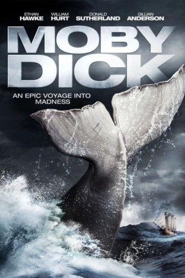

")
 
 IMDB-Wertung: 6.1 / 10
IMDB-Wertung: 6.1 / 10  Metascore:
Metascore: 
The sole survivor of a lost whaling ship relates the tale of his captain's self-destructive obsession to hunt the white whale, Moby Dick.
Jahr: 2011
Dauer: 129 Minuten
FSK:
Land: Deutschland Studio: AMG EntertainmentTonspuren:
Untertitel:
Auflösung: 720p (1280x720) Größe: 5621 MB
Genre: Drama, Abenteuer, TV-Serie
Regisseur: Mike Barker
Drehbuch: Seung-wan Ryoo
Soundtrack:
Darsteller:
 William Hurt als Captain Ahab
William Hurt als Captain Ahab Ethan Hawke als Starbuck
Ethan Hawke als Starbuck Eddie Marsan als Stubb
Eddie Marsan als Stubb Billy Boyd als Elijah
Billy Boyd als Elijah Gary Levert als Perth
Gary Levert als Perth Stephen McHattie als Rachel Captain
Stephen McHattie als Rachel Captain Donald Sutherland als Father Mapple
Donald Sutherland als Father MappleDatei: X:\2011(G-M)\Moby Dick (2011, FSK, 1280x720).mkv seit 08.06.2016
Festplatte: HD 2011(G-Z)
 Es gibt insgesamt 100 Filme in der Gruppe '2011(G-M)'
Es gibt insgesamt 100 Filme in der Gruppe '2011(G-M)'